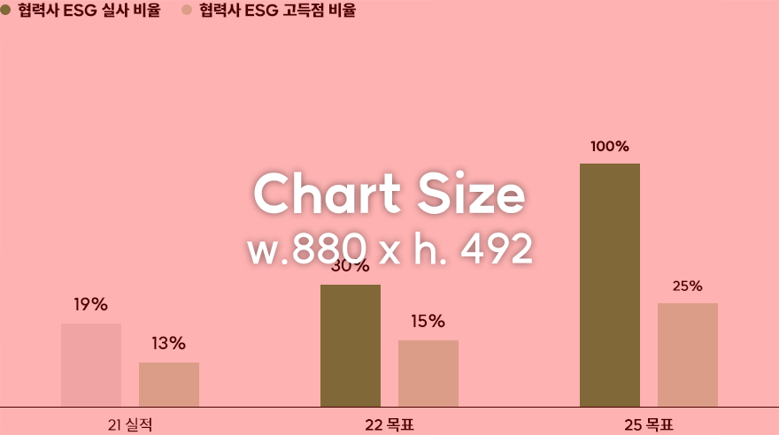

11. Monitoring Supplier ESG Assessment
100% key supplier ESG due diligence rate, High score rate in ESG risk assessment of key suppliers : ▲25%
SK innovation sets the main goal of 'supplier ESG risk management' as developing 'sustainable supply chain and stable procurement'. To achieve this goal, we will identify and support high-risk suppliers and continuously work with them to foster a sustainable supply chain.
Key supplier ESG due diligence rate / High score rate

* (Reference) Criteria on high-scoring partners: Leader group on ESG regular evaluation criteria (Grades 1 and 2 in ESG evaluation)
Strategy
Advancing a sustainable supply chain by implementing a customized ESG consulting program based on the regular evaluation of suppliers
- Providing in-person/online training customized for the respective ESG evaluation scores
- Endorsing mid-and long-term ESG performance improvements through consulting services